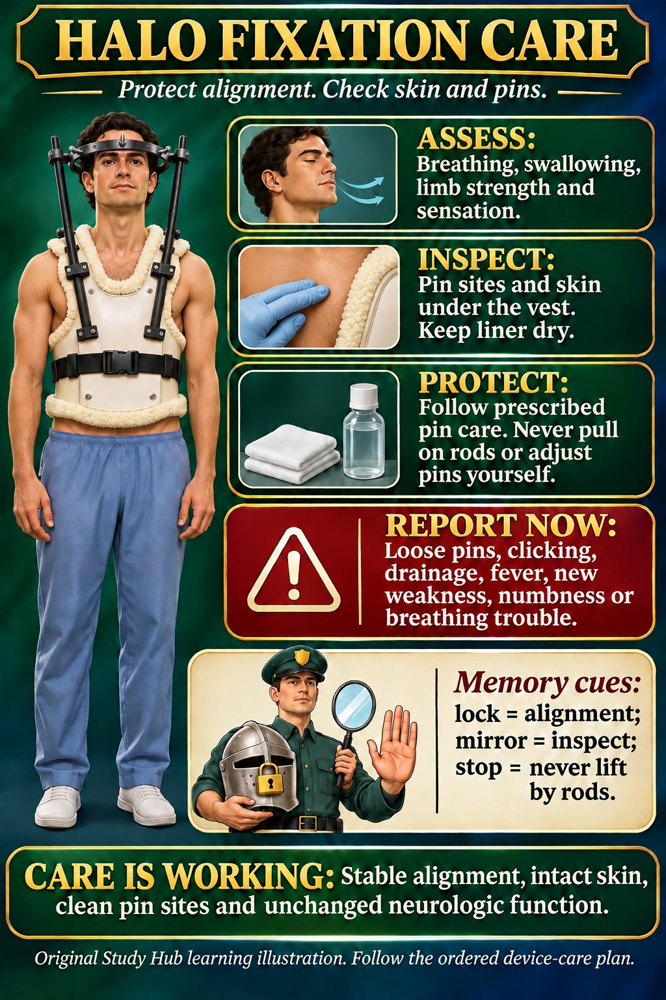

NUR 258 · Module 8 · Neurologic nursing
Halo fixation care
Protect alignment. Assess skin, pin sites and neurologic function.
Report new weakness, numbness, breathing trouble or a loose device promptly.

Nursing steps in readable text
Assess
Compare breathing, swallowing, limb strength and sensation with baseline.
Inspect
Check pin sites for redness, drainage, swelling or pain. Check skin beneath the vest and keep the liner dry. Use the prescribed cleaning method.
Protect
Do not adjust pins or hardware yourself. The clinical team controls fit and tightening. Never pull on the metal rods to move the patient.
Evaluate
Effective care maintains alignment, intact skin, clean pin sites and stable neurologic function. New clicking, loose pins, fever or increasing pain needs review.
Memory picture key
- Locked helmet — Maintain the prescribed cervical alignment.
- Inspection mirror — Inspect pin sites and the skin beneath the vest.
- Stop hand — Never lift, pull or reposition by the rods.
The small memory scene uses symbols. It is an original mnemonic, not an official Picmonic product.
Use the device team’s instructions for clothing and skin access. The vest liner generally rests against the skin, and clothing goes over the brace. Keep the prescribed emergency-release tool available according to local policy.
Practice clinical judgment
A patient reports new clicking in a halo device. Should you tighten the pins?
Show the answer
No. Maintain alignment and contact the treating team promptly. Do not adjust the pins or use the rods as handles.
Sources and original handouts
No exact topic-specific Simple Nursing handout was found in the site’s indexed Simple Nursing collection. Existing related handouts stay with their original lessons.
Clinical sources checked November 7, 2026. Use the assigned course material and individual clinical orders. Artwork is educational and does not specify a device’s technical fitting procedure.